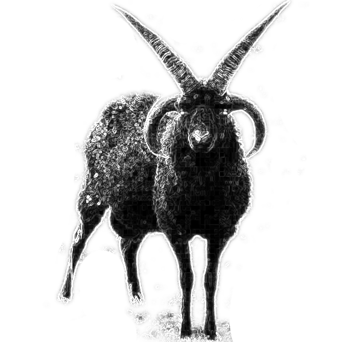

Black Goat: Authority Aggregation¶
The primary objective of this project is provide a platform for non-hierarchical alignments among an unlimited number of authority systems. We conceptualize a non-hierarchical alignment as a system of identity statements about concepts in different authority systems. This is primarily intended for projects that introduce a significant number of concepts in their own namespace, a substantial proportion of which overlap with other authority systems. Projects can register their own concepts, make statements about identities between those concepts and those in other systems, and traverse those identity relations to align datasets that rely on contrasting authority systems.
While Black Goat is envisioned to provide some basic tools for discovering mappings between authorities, the primary use case is to provide support for mappings generated in other ways (e.g. the Linked Open Data Enhancer).
Contents: